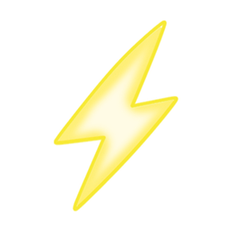
Énergie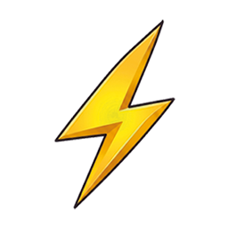
Seuil 4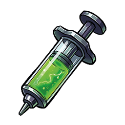
Adrénaline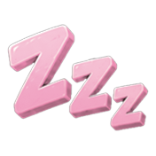
Fatigue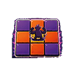
Périmètre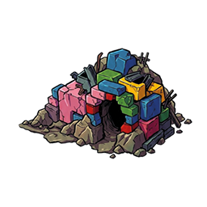
Repaire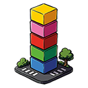
Bâtiment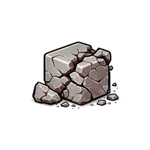
Bloc de béton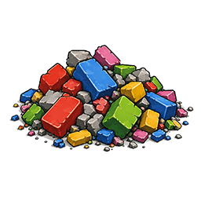
Amas de béton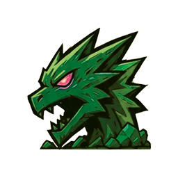
Titan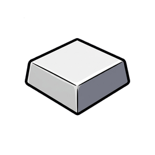
Socle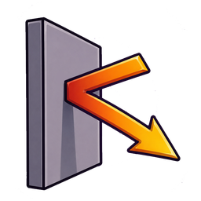
Arrêt faute de puissance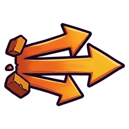
Projection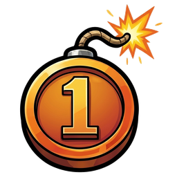
DétonateurDes Titans lâchés dans une ville. Le plus haut score gagne. Le reste s'ecroule.
"Les assurances ne couvrent sûrement pas ça."
Vous êtes le résultat d'une expérience scientifique qui a très mal tourné — et c'est tant mieux.
Issus d'expériences scientifiques poussées toujours plus loin — plus grands, plus forts, plus intelligents — vous étiez censés rester sous contrôle. La dernière expérience en date a mal tourné. Vous vous êtes échappés. Et maintenant, vous comptez bien tout casser dans BIG CITY.
Raser la ville et écraser vos adversaires. Le plus haut score l'emporte, le reste… s'effondre. (Les assurances ne couvrent sûrement pas ça.)
3 à 4 joueurs pour 1h30 à 2h de destruction, de stratégie, de fourberie et de chaos.
À l'aide de vos 6 cartes Actions et de vos neurones (ce qu'il en reste), programmez vos coups pour démolir la ville en 3D et écraser la concurrence. Certaines surprises viendront pimenter la partie — et on ne parle pas du Carolina Reaper.
Envie de jouer un escargot, un ornithorynque, un panda ou un lama géant ? C'est ici que ça se passe.
Tout ce que tu vas démolir, je ne partage pas, voler, ou cacher derrière un paravent.
Un bâtiment n'est pas une pièce à part : c'est un empilement de blocs colorés (jusqu'à 4 étages) sur une case bâtiment du plateau. Les 5 couleurs ci-dessous sont les blocs qui le composent.
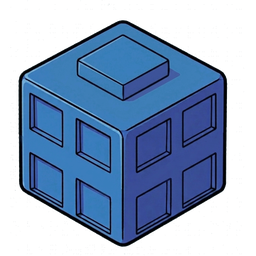
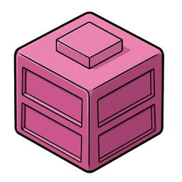
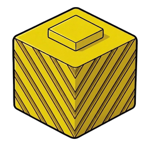
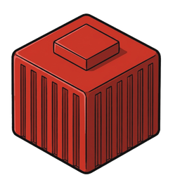
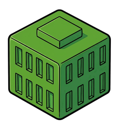
Tu es un Titan qui détruit BIG CITY pour collecter des ressources colorées. Chaque manche : prépare → agis → ramasse
BIG CITY est une grille de 9×9. Les bâtiments occupent les cases impaires max (4 étages). Le reste : couloirs.
Placement aléatoire sur les 25 cases bâtiment. Pas obligé de tout remplir.
Placés sous chaque bâtiment. Valeur = nombre de blocs à la construction. FIXE — elle ne change pas si le bâtiment perd des blocs ensuite.
Placés adjacents aux 4 coins · en ordre inverse du sens de jeu · 2 Titans peuvent partager un coin si chacun est sur une case adjacente différente à celui-ci.
Des coins peuvent rester vides.
Chaque joueur reçoit 6 cartes Actions. Le Détonateur est donné au joueur qui a cassé quelque chose récemment.
1 piste commune · 2 couloirs. Les pions avancent toute la partie. Le classement final donne des points.
💪Bagarre
+1 case quand un adverse est déplacé par une de tes actions.
💥Destruction
+1 case quand un est abimé par une de tes actions.
Ces deux règles s'appliquent à chaque tour, quoi qu'il arrive. Elles ne sont pas obligatoires.
Avant ton action, uniquement. Tu peux te déplacer de 2 cases max Tu ne peux pas traverser un titan ou un batiment. Aucun déplacement via ce passif n'est possible après avoir joué ta carte Action du tour.
Après ton action. récupères 1 au choix dans ton Si plusieurs sont accessibles , tu choisis librement lequel récupérer.
L'effet de l'énergie dépend de la carte jouée et de sa valeur.
Comment on la compte : l'énergie d'une action vaut le nombre de cases occupées dans ton Périmètre — un bâtiment debout, un Titan adverse, ta propre case. Ton Titan compte pour 1 : ta case est incluse dans le décompte. L'énergie ne descend donc jamais en dessous de 1, et il te suffit de 3 cases occupées autour de toi pour atteindre le Seuil 4.
Tout élément percutant un bâtiment avec ou atteignant le bord du plateau sans l'énergie du Seuil 4 s'arrête net. Il ne repart pas en sens inverse.
Dès qu'un en mouvement arrive sur une case occupée → il projette les éléments présents du nombre de cases égal à l'énergie restante · transmission possible.
impacté avec une est considéré comme un mur sauf mention contraire.
La règle absolue de projection ne s'applique pas au titan initiateur Si arrive sur sa case en cours de trajectoire :
S'arrête immédiatement sur la case du Titan initiateur, quelle que soit l'énergie restante — l'initiateur ne peut pas être impacté par sa propre attaque. (Correctif V36 : remplace l'ancien comportement « traverse si il reste de l'énergie ».)
Si en rebord de plateau est bousculé en dehors de BIG CITY, il sort du plateau et réapparaît de l'autre côté (bord opposé), sans entrer sur le plateau.
Il reste en attente à l'extérieur. Rentrer sur le plateau coûte 1 de déplacement lors de son prochain tour.
Sur BIG CITY, les bâtiments occupent les intersections impaires (A·C·E·G·I × 1·3·5·7·9) alors que les Titans circulent aussi sur les couloirs pairs : une attaque de Titan sur un bâtiment adjacent est donc très généralement diagonale, ce n'est pas un cas rare.
Quand une trajectoire diagonale sort du plateau par les deux bords à la fois (ligne ET colonne dépassées ensemble, typiquement par un coin) : l'élément réapparaît au point exactement opposé (symétrie centrale du plateau) et poursuit son déplacement dans la même direction diagonale avec l'énergie restante. Même principe de bouclage que la Faille spatio-temporelle : la trajectoire peut traverser le plateau plusieurs fois tant que l'énergie restante (dégressive de 1 par case) le permet.
| Contenu d'une case | Autorisé ? |
|---|---|
| + | ✓ OUI |
| + | ✓ OUI |
| + | ✓ OUI |
| + | ✗ NON |
| + | ✗ NON |
Placés aléatoirement sur big city, mais obligatoirement au pied
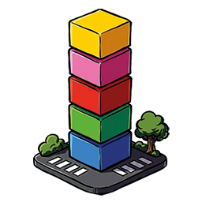
d'une hauteur minimale de 3 étages lors de la mise en place.Quand un détruit et récupère un téléporteur, il le met dans son . Le téléporteur est alors retiré définitivement du plateau.
Coûte 1 déplacement
Gratuit
1 seule téléportation par carte jouée · impossible d'enchaîner 2 téléportations
hors service définitivement
Plusieurs sur la même case forment un . Chaque suivant s'empile au sommet (+1 hauteur). Pas de limite. Seuls des peuvent s'empiler.
touchée par une action dont l'énergie est au moment de l'impact.
éjectés du haut vers le bas, dans la direction opposée à la percussion, d'un nombre de cases égal à leur hauteur.
À l'arrivée d'un / sur une case impossible, l'énergie restante décide du résultat :
Si l'élément sort du plateau (bord dépassé, énergie suffisante) → il réapparaît du côté opposé (point exactement opposé si la sortie est diagonale, cf. encadré « Sortie diagonale du plateau ») et finit son déplacement. Le bouclage est possible plusieurs fois si l'énergie restante le permet. Les règles normales s'appliquent au reste de sa trajectoire.
Si la case visée est déjà occupée de façon incompatible (ex. un bâtiment) → l'élément se pose sur la case adjacente, entre la case où il était et celle où il aurait dû aller. Quel que soit le seuil d'énergie.
Un poussé au-delà du bord ne rebondit pas et ne passe pas par la faille. C'est du catch : on le sort du ring. Aucune condition d'énergie, aucun seuil.
Il quitte BIG CITY et ne revient qu'au début de son propre tour. Tant qu'il est dehors, il n'occupe aucune case : il ne compte pas dans l'énergie, ne bloque personne, et ne peut pas être ciblé. C'est voulu — sans ce délai, on pourrait s'acharner sur lui plusieurs fois dans le même round.
Il réapparaît de l'autre côté du plateau, exactement comme un élément qui traverse la Faille : seul l'axe par lequel il est sorti boucle, l'autre garde la coordonnée que sa trajectoire lui donne. Sorti plein est en C9, il rentre par C1 ; poussé au nord-ouest depuis H1, il sort par la colonne et rentre en G9 ; sorti par un coin, où ligne et colonne dépassent en même temps, il rentre par le coin opposé. Si cette case est prise, il rentre par la case libre la plus proche du bord ; sur un coin, les deux rebords sont bons, on prend le plus court. Il rentre toujours, quoi qu'il arrive.
L'atterrissage provoque un ecroulement immédiat.
Les sont distribués du haut vers le bas sur les cases adjacentes à la case d'impact, au choix du joueur actif.
Ces termes traversent tout le livret. Leur définition est fixe et non négociable.
L'attaquant désigne 2 options différentes chez le défenseur. Une option est soit une couleur de son repaire, soit « un Socle tiré au sort » s'il en possède au moins un. L'option Socle est anonyme : l'attaquant la propose mais ne choisit pas LEQUEL partira, et personne n'en connaît la valeur avant le tirage — c'est ce qui l'empêche de viser le Socle de 4. La cible doit en perdre 1 parmi les 2 options désignées par l'attaquant — c'est la cible, pas l'attaquant, qui choisit laquelle. Où va le bloc perdu dépend de la CARTE jouée : voir le tableau « Où va le bloc perdu » ci-dessous. Évitable : le défenseur peut donner 1 adrénaline à l'attaquant pour annuler le DIL. Le Vert ne peut jamais être désigné, sauf s'il est la seule couleur du repaire : sa valeur n'existe qu'au décompte final, en fixer la perte reviendrait à jouer un prix que personne ne connaît. Impossible s'il n'y a pas 2 options distinctes à désigner — une cible qui n'a qu'une seule couleur et aucun Socle y échappe, mais « 1 couleur + 1 Socle » suffit à rendre le Dilemme possible. Quand il est impossible, il n'y a aucun effet de repli : l'action est simplement notée et ne produit rien (tranché le 14/08/2026).
L'attaquant choisit librement 1 ressource du Repaire de l'adversaire, sans étape de défense. Où va cet élément dépend de la CARTE jouée : voir le tableau « Où va le bloc perdu » ci-dessous. Une adrénaline volée rejoint toujours la réserve de l'attaquant : elle ne se pose pas au sol. Possible dès 1 seule ressource (voir la FAQ : l'ancien seuil de 2 était un alignement erroné sur la contrainte du Dilemme). Ne peut pas être évité avec une adrénaline.
Deux écarts assumés avec le Dilemme (tranchés le 18/08/2026) : les Socles ne sont PAS ciblables par une Rage, ils restent réservés au Dilemme ; en revanche le Vert l'est, alors que le Dilemme le protège. La Rage est plus brutale, c'est ce qui la distingue.
Effet de Boing Boing et Graouhhh. L'attaquant pioche au hasard 1 carte de la MAIN de la cible et la place face cachée dans sa zone Repos. Jamais une des 3 cartes de la Manche en cours — celles-ci sont engagées, même celles qui ne sont pas encore résolues. La carte volée est indisponible pendant toute la Manche suivante. La cible peut la consulter — pas les autres. S'ajoute au vol normal de Phase 3. Défense : 1 adrénaline.
Détermine le seuil actif de l'action jouée au moment de l'action.
Permet de modifier la valeur d'énergie.
Palier déclenché quand l'énergie restante au moment de l'impact atteint 4 ou plus. Active l'effet le plus fort de la carte jouée (RAGE, Patatras, Écroulement selon le contexte). En dessous de 4, c'est l'effet de base qui s'applique.
🌀 Sortie de faille : l'élément n'a aucune case précédente de ce côté du plateau. On prend alors les cases voisines de la case visée qui ne franchissent pas l'obstacle. Un élément qui ressort vers l'ouest sur une case bloquée en C9 se pose donc en B9 ou D9 ; s'il arrivait en diagonale sud-ouest, en B9 uniquement.
| Carte | DIL | RAGE |
|---|---|---|
| 01 · Tout Casser | Au sol | Au sol |
| 02 · Tête en Avant | Au sol | Attaquant |
| 03 · Graouhhh | Au sol | — |
| 04 · Boing Boing | Au sol | Attaquant |
| 05 · Faut Pas Me Chauffer | Attaquant | Attaquant |
« Au sol » veut dire sur la case où la cible a encaissé le coup, avant sa projection éventuelle. Le bloc y redevient ramassable par n'importe qui, y compris par la victime. Un Socle perdu en DIL suit exactement la même route et garde sa valeur. Une adrénaline volée fait exception : elle ne se pose pas au sol et rejoint toujours la réserve de l'attaquant.
1 Adrénaline distribué à chaque début de manche.
| Contexte | Moment | Effet |
|---|---|---|
| Toute action sauf Je Ne Partage Pas et Graouhhh | À tout moment | +1 à la valeur de l'énergie |
| Déplacement passif | Sur le moment | +1 case de déplacement |
| Graouhhh — bonus | Après l'action | +1 reçue si plusieurs sont impactés |
| Immédiatement | Annule le vol de carte | |
| Défense Vol Phase 3 | Immédiatement | Annule le vol de carte normal |
| Faut Pas Me Chauffer — mise cachée | Avant comparaison des sommes | Attaquant et cible peuvent chacun ajouter autant d'Adrénaline qu'ils souhaitent, en mise cachée |
→ 6 manches
→ 4 manches
Dans le sens du joueur qui détient le détonateur, chaque titan choisit 1 carte parmi les 3 jouées du titan suivant et la pose face visible dans sa zone Repos.
Défense : 1 annule ce vol.
Les cartes en zone repos de la manche précédente sont restituées en main à chaque joueur.
Valeurs de Force : Tout Casser 1 · Tête en avant 2 · Graouhhh 2 · Boing Boing 2 · Faut Pas Me Chauffer 3 · Je Ne Partage Pas 3.
+1 DESTRUCTION = avance ta piste Destruction
+1 BAGARRE = avance ta piste Bagarre
= la cible perd 1 carte de sa main
| 01 · TOUT CASSER⚡ Force 1 | ||
| Énergie = cases occupées dans ton périmètre (max 8). | ||
| Élément | Cond. | Effet |
|---|---|---|
| Casse 1 bloc du haut · projeté · +1 Destruction | ||
| < Seuil 4 | Arrêt net · case adjacente | |
| Projeté de (x) · énergie transmise | ||
| Patatras · éjection haut→bas | ||
| DIL · déplacé de (x) · énergie transmise · +1 Bagarre | ||
| RAGE · déplacé de (x) · énergie transmise · +1 Bagarre | ||
| 🛡 Immunité : tu ne peux pas être projeté par ton propre Tout Casser. Si un élément de ton Tout Casser revient sur ta case, il s'arrête immédiatement dessus. | ||
| 02 · TÊTE EN AVANT⚡ Force 2 | ||
| Fonce en ligne droite sur 3 cases (+1 par adrénaline). | ||
| Élément | Cond. | Effet |
| 1 bloc arrêt · +1 Destruction | ||
| 1 bloc · celui du dessous projeté direction opposée · +1 Destruction | ||
| Récupéré · prend sa place · arrêt | ||
| Plus haut · celui du dessous projeté direction opposée | ||
| DIL repaire · +1 Bagarre | ||
| RAGE repaire · projeté · +1 Bagarre | ||
| Adrénaline : +1 valeur · peut faire basculer le seuil. | ||
| 03 · GRAOUHHH⚡ Force 2 | ||
| sur l'axe = mur · les derrière sont protégés. | ||
| Élément | Cond. | Effet |
| 1 axe | DIL · recule · +1 Bagarre par Titan touché | |
| 🎁 Bonus : 2 touchés → +1 Adrénaline. 🚫 Aucune dépensable sur cette action. | ||
| 04 · BOING BOING⚡ Force 2 | ||
| Destination au choix · 3 cases max · tous azimuts. Saute-mouton Chaque obstacle se saute gratuitement, seules les cases libres comptent dans les 3. | ||
| Élément | Cond. | Effet |
| Ramassé | ||
| Écroulement · distribués sur cases adjacentes | ||
| DIL · projeté de la valeur restante · +1 Bagarre | ||
| RAGE → de l'attaquant · tombe sur la case · projeté · +1 Bagarre | ||
| 🦘 Projection du Titan atterri = distance restante du Boing Boing. Le est inatteignable sans adrénaline : l'énergie vaut 3 + adrénaline − (distance − 1), donc 3 au mieux gratuitement. Il en faut autant que de cases sautées — 1 pour un Titan adjacent, 2 à deux cases, 3 à trois. | ||
| 05 · FAUT PAS ME CHAUFFER⚡ Force 3 | ||
| Cible les dans ton · somme de tes 3 cartes programmées vs somme de la cible. Attaquant et cible peuvent chacun ajouter en mise cachée autant d'qu'ils souhaitent. | ||
| Élément | Cond. | Effet |
| Victoire | RAGE · +1 Bagarre · perdants projetés (n+1 cases) | |
| Égalité | Attaquant gagnant — DIL · +1 Bagarre · projection idem | |
| Défaite | Rien | |
| 🎯 Les mises en jeu (par l'attaquant comme par la cible) sont révélées puis dépensées quel que soit le résultat. | ||
| 06 · JE NE PARTAGE PAS⚡ Force 3 | ||
| Ramasse au choix dans ton périmètre. Aucune condition sur la hauteur ou la couleur. | ||
| Condition | Effet | |
| 🏆 Lanterne Rouge | Si tu as autant ou moins de blocs que le moins doté → 3 blocs au lieu de 2 | |
| 🚫 Aucune adrénaline dépensable sur cette action (restriction totale). | ||
Ton Titan est en A2. Trois bâtiments en place : A1 · C1 (1 étage) · C3.
Tu avances vers B2. Recompte ton périmètre après le déplacement.
Cases occupées depuis B2 : A1 · C1 · C3 = énergie 3 → seuil
Tu dépenses 1 adrénaline → énergie 4 → seuil +3
Chaque bâtiment dans ton périmètre est impacté · 1 bloc cassé du haut · +3 Destruction · projeté de 4 cases en sens opposé.
Le bloc issu de A1 est adjacent à toi en B2 · tu le récupères · la case se libère · tu te déplaces obligatoirement dessus.
1 événement tiré au hasard par manche. Après usage : remis dans le deck et mélangé.
Chaque bloc Vert (collecté normalement ou issu d'un Téléporteur) est assigné en secret, individuellement, à l'une des deux fonctions suivantes au moment du placement derrière le paravent :
1er à posséder 1 bloc de chaque couleur standard. Attribué en cours de partie.
Plus grand nombre de socles (pas la valeur). Égalité = valeur la plus haute · égalité parfaite = divisé. Fin de partie.
Deux Titans peuvent terminer avec exactement le même score. On applique alors les critères suivants, dans cet ordre, en s'arrêtant au premier qui sépare.
Celui qui a su en garder sous le pied l'emporte. Une Adrénaline vaut déjà 3 points au décompte : celui qui en conserve après égalité a mieux géré sa réserve.
On compare la plus belle pièce de chaque Repaire, pas le total des socles — celui-ci est déjà compté dans le score. Un Socle de 4 bat trois Socles de 1.
On additionne la Force imprimée des cartes encore en main — la même notion de « carte non jouée » que la Fatigue. Le plus haut total l'emporte.
La partie s'arrête à la fin de la Manche en cours si le nombre maximal de Manches est atteint (4 Manches à 4 joueurs · 6 Manches à 3 joueurs), ou à la fin de manche si l'une des conditions suivantes est remplie sur le plateau.
Il ne reste qu'un nombre déterminé X de bâtiments debout sur le plateau.
Une couleur de bloc a entièrement disparu du plateau (plus aucun exemplaire disponible à collecter).
Il ne reste plus qu'un seul Téléporteur actif sur le plateau.
4 titans · fin de partie · situation serrée · révélation simultanée des Verts.
| TITAN A | TITAN B | TITAN C | TITAN D | Total | |
|---|---|---|---|---|---|
| Bleu | 6 | 6 | 4 | 3 | 19 ✓ |
| Rose | 3 | 2 | 4 | 3 | 12 ✓ |
| Orange | 3 | 4 | 2 | 1 | 10 ✓ |
| Rouge | 2 | 1 | 2 | 1 | 6 ✓ |
| Vert | 1 | 2 | 2 | 0 | 5 ✓ |
| Socles | 11 | 9 | 9 | 8 | 37 |
| 💪 Bagarre | 2e | 1er | 3e | 4e | |
| 💥 Destruction | 1er | 3e | 4e | 2e |
| Joueur | Verts placés sur | Résultat |
|---|---|---|
| TITAN A | 1 sur Rouge | 2 → 3 Rouge |
| TITAN B | 2 sur Rose | 2 → 4 Rose |
| TITAN C | 2 sur Bleu | 4 → 6 Bleu |
| TITAN D | 0 | — |
| Composante | A | B | C | D |
|---|---|---|---|---|
| Bleu | 15 | 15 | 15 | 5 |
| Rose | 6 | 8 | 8 | 6 |
| Bonus Rose +10 | — | +5 | +5 | — |
| Orange | 5 | 11 | 5 | 0 |
| Rouge | 7 | 3 | 7 | 3 |
| Socles | 11 | 9 | 9 | 8 |
| 🌈 Arc-en-ciel | +5 | — | — | — |
| 🗿 Collectionneur | — | — | +5 | — |
| 💪 Bagarre | +3 | +7 | +1 | 0 |
| 💥 Destruction | +7 | +1 | 0 | +3 |
| TOTAL | 59 | 59 | 60 | 25 |
Les situations qui reviennent en jeu et leur résolution officielle. Tous les points sont désormais tranchés — les cinq zones grises qui restaient ont été arbitrées et sont appliquées par le moteur numérique.
La carte reste face cachée — aucune information donnée aux adversaires.
L'attaquant gagne mais uniquement en DIL (pas MAX). La somme comparée est celle des 3 cartes programmées pour la manche entière.
Une carte restée face cachée ne peut pas être volée en Phase Repos. Seules les 3 cartes face visible sont éligibles.
✓ TRANCHÉ Non — la fonction joker est réservée au Vert issu d'un Téléporteur en Repaire (voir Téléporteurs & Scoring final → Vert).
✓ TRANCHÉ La question ne se pose plus : RAGE est possible dès 1 seule ressource. L'attaquant n'en prend qu'une, il n'a donc besoin que d'une cible. L'ancien seuil de 2 était un alignement erroné sur la contrainte de DIL, qui exige, lui, 2 couleurs différentes. L'Adrénaline de la cible compte dans ses ressources et devient elle-même ciblable.
✓ TRANCHÉ Non. L'immunité initiateur s'applique quel que soit le chemin parcouru par l'élément (Faille comprise). Précision V36 : l'élément s'arrête immédiatement sur la case du Titan initiateur, quelle que soit l'énergie restante (remplace l'ancien comportement « traverse si il reste de l'énergie »).
✓ TRANCHÉ Oui, quel que soit le résultat. Vrai pour l'attaquant comme pour la cible.
✓ TRANCHÉ Oui — chaque Bloc éjecté suit les règles normales de projection, réaction en chaîne explicitement prévue.
✓ TRANCHÉ Personne. Le Socle reste au sol de BIG CITY, sans attribution automatique — ni au Titan qui a frappé, ni à celui qui a provoqué le ricochet. Il redevient un élément libre que n'importe qui pourra ramasser plus tard par les voies normales (Récupération, Tête en Avant, Boing Boing, Je Ne Partage Pas).
À ne pas confondre avec la Destruction : le point de piste, lui, revient bien à l'initiateur de la carte, ricochet compris. C'est son action qui a causé la casse.
✓ TRANCHÉ Il n'y a pas de conflit à arbitrer. Chaque coin offre 2 positions distinctes : deux Titans qui le partagent occupent malgré tout deux cases différentes et ne se gênent pas au départ. Aucune règle de priorité n'est nécessaire.
✓ TRANCHÉ Cumulatif linéaire : +1 Adrénaline par Titan touché au-delà du premier. 2 touchés → +1 · 3 touchés → +2. Aucun plafond à écrire : l'initiateur ne peut toucher que 3 autres Titans au maximum, le bonus culmine donc à +2. Motif : Graouhhh est sous-jouée en test, et aligner 3 Titans avec une carte programmée une manche à l'avance est un coup spectaculaire qui méritait d'être récompensé à hauteur de sa rareté.
✓ TRANCHÉ Non — un DIL exige de désigner 2 couleurs différentes ; impossible si la cible n'a qu'une seule couleur en repaire. Il n'existe aucun effet de repli : l'action est simplement notée au journal et ne produit aucun effet. Le point est clos.
✓ TRANCHÉ Oui — c'est même le cas courant pour une attaque de bâtiment depuis la position d'un Titan (bâtiments sur intersections impaires, Titans aussi sur couloirs pairs). En cas de sortie du plateau par les deux bords à la fois (coin), l'élément réapparaît au point exactement opposé (symétrie centrale) et poursuit son déplacement — voir « Sortie diagonale du plateau » dans les Règles transversales.
Chaque partie sera unique, chaotique et destructive.